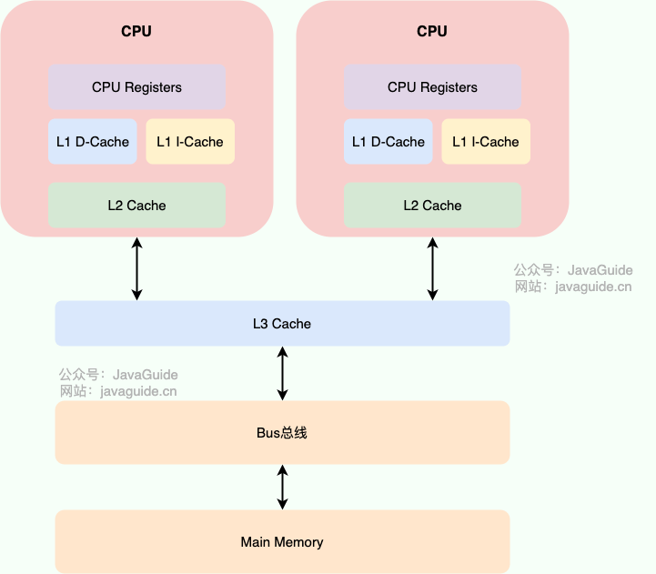
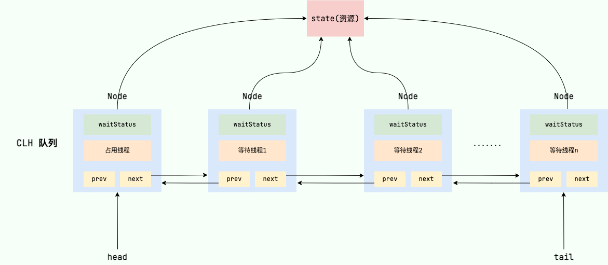
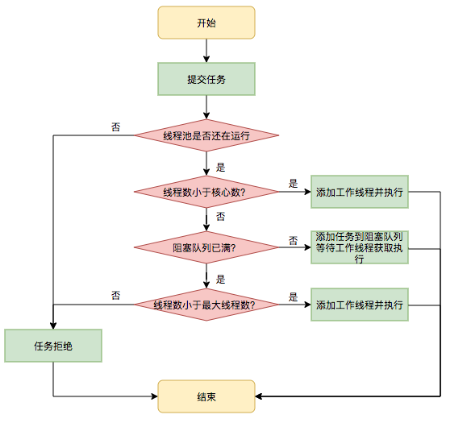

乐观锁和悲观锁
如果将悲观锁（Pessimistic Lock）和乐观锁（PessimisticLock 或 OptimisticLock）对应到现实生活中来。悲观锁有点像是一位比较悲观（也可以说是未雨绸缪）的人，总是会假设最坏的情况，避免出现问题。乐观锁有点像是一位比较乐观的人，总是会假设最好的情况，在要出现问题之前快速解决问题。
在程序世界中，乐观锁和悲观锁的最终目的都是为了保证线程安全，避免在并发场景下的资源竞争问题。但是，相比于乐观锁，悲观锁对性能的影响更大！
什么是悲观锁
悲观锁总是假设最坏的情况，认为共享资源每次被访问的时候就会出现问题(比如共享数据被修改)，所以每次在获取资源操作的时候都会上锁，这样其他线程想拿到这个资源就会阻塞直到锁被上一个持有者释放。也就是说，共享资源每次只给一个线程使用，其它线程阻塞，用完后再把资源转让给其它线程。
像 Java 中synchronized和ReentrantLock等独占锁就是悲观锁思想的实现。
|
|
高并发的场景下，激烈的锁竞争会造成线程阻塞，大量阻塞线程会导致系统的上下文切换，增加系统的性能开销。并且，悲观锁还可能会存在死锁问题，影响代码的正常运行。
什么是乐观锁
乐观锁总是假设最好的情况，认为共享资源每次被访问的时候不会出现问题，线程可以不停地执行，无需加锁也无需等待，只是在提交修改的时候去验证对应的资源（也就是数据）是否被其它线程修改了（具体方法可以使用版本号机制或 CAS 算法）。
像 Java 中java.util.concurrent.atomic包下面的原子变量类（比如AtomicInteger、LongAdder）就是使用了乐观锁的一种实现方式 CAS 实现的。
|
|
高并发的场景下，乐观锁相比悲观锁来说，不存在锁竞争造成线程阻塞，也不会有死锁的问题，在性能上往往会更胜一筹。但是，如果冲突频繁发生（写占比非常多的情况），会频繁失败和重试（悲观锁的开销是固定的），这样同样会非常影响性能，导致 CPU 飙升。
不过，大量失败重试的问题也是可以解决的，像我们前面提到的 LongAdder以空间换时间的方式就解决了这个问题。
理论上来说：
- 悲观锁通常多用于写比较多的情况下（多写场景，竞争激烈），这样可以避免频繁失败和重试影响性能，悲观锁的开销是固定的。不过，如果乐观锁解决了频繁失败和重试这个问题的话（比如
LongAdder），也是可以考虑使用乐观锁的，要视实际情况而定。 - 乐观锁通常多于写比较少的情况下（多读场景，竞争较少），这样可以避免频繁加锁影响性能。不过，乐观锁主要针对的对象是单个共享变量（参考
java.util.concurrent.atomic包下面的原子变量类）。
如何实现乐观锁
乐观锁一般会使用版本号机制或 CAS 算法实现，CAS 算法相对来说更多一些，这里需要格外注意。
版本号机制
一般是在数据表中加上一个数据版本号 version 字段，表示数据被修改的次数。当数据被修改时，version 值会加一。当线程 A 要更新数据值时，在读取数据的同时也会读取 version 值，在提交更新时，若刚才读取到的 version 值为当前数据库中的 version 值相等时才更新，否则重试更新操作，直到更新成功。
举一个简单的例子：假设数据库中帐户信息表中有一个 version 字段，当前值为 1 ；而当前帐户余额字段（ balance ）为 $100 。
- 操作员 A 此时将其读出（
version=1 ），并从其帐户余额中扣除 $50（ $100-$50 ）。 - 在操作员 A 操作的过程中，操作员 B 也读入此用户信息（
version=1 ），并从其帐户余额中扣除 $20 （ $100-$20 ）。 - 操作员 A 完成了修改工作，将数据版本号（
version=1 ），连同帐户扣除后余额（balance=$50 ），提交至数据库更新，此时由于提交数据版本等于数据库记录当前版本，数据被更新，数据库记录version更新为 2 。 - 操作员 B 完成了操作，也将版本号（
version=1 ）试图向数据库提交数据（balance=$80 ），但此时比对数据库记录版本时发现，操作员 B 提交的数据版本号为 1 ，数据库记录当前版本也为 2 ，不满足 “ 提交版本必须等于当前版本才能执行更新 “ 的乐观锁策略，因此，操作员 B 的提交被驳回。
这样就避免了操作员 B 用基于 version=1 的旧数据修改的结果覆盖操作员 A 的操作结果的可能。
CAS 算法
CAS 的全称是 Compare And Swap（比较和交换） ，用于实现乐观锁，被广泛应用于各大框架中。CAS 的思想很简单，就是用一个预期值和要更新的变量值进行比较，两值相等才会进行更新。
CAS 是一个原子操作，底层依赖于一条 CPU 的原子指令。
原子操作 即最小不可拆分的操作，也就是说操作一旦开始，就不能被打断，直到操作完成。
CAS 涉及到三个操作数：
- V：要更新的变量值(Var)
- E：预期值(Expected)
- N：拟写入的新值(New)
当且仅当 V 的值等于 E 时，CAS 通过原子方式用新值 N 来更新 V 的值。如果不等，说明已经有其它线程更新了 V，则当前线程放弃更新。
举一个简单的例子：线程 A 要修改变量 i 的值为 6，i 原值为 1（V = 1，E=1，N=6，假设不存在 ABA 问题）。
- i 与 1 进行比较，如果相等， 则说明没被其他线程修改，可以被设置为 6 。
- i 与 1 进行比较，如果不相等，则说明被其他线程修改，当前线程放弃更新，CAS 操作失败。
当多个线程同时使用 CAS 操作一个变量时，只有一个会胜出，并成功更新，其余均会失败，但失败的线程并不会被挂起，仅是被告知失败，并且允许再次尝试，当然也允许失败的线程放弃操作。
Java 语言并没有直接实现 CAS，CAS 相关的实现是通过 C++ 内联汇编的形式实现的（JNI 调用）。因此， CAS 的具体实现和操作系统以及 CPU 都有关系。
sun.misc包下的Unsafe类提供了compareAndSwapObject、compareAndSwapInt、compareAndSwapLong方法来实现的对Object、int、long类型的 CAS 操作
|
|
关于 Unsafe 类的详细介绍可以看这篇文章：Java 魔法类 Unsafe 详解 - JavaGuide - 2022 。
乐观锁存在哪些问题？
ABA 问题是乐观锁最常见的问题。
ABA 问题
如果一个变量 V 初次读取的时候是 A 值，并且在准备赋值的时候检查到它仍然是 A 值，那我们就能说明它的值没有被其他线程修改过了吗？很明显是不能的，因为在这段时间它的值可能被改为其他值，然后又改回 A，那 CAS 操作就会误认为它从来没有被修改过。这个问题被称为 CAS 操作的 “ABA"问题。
ABA 问题的解决思路是在变量前面追加上版本号或者时间戳。JDK 1.5 以后的 AtomicStampedReference 类就是用来解决 ABA 问题的，其中的 compareAndSet() 方法就是首先检查当前引用是否等于预期引用，并且当前标志是否等于预期标志，如果全部相等，则以原子方式将该引用和该标志的值设置为给定的更新值。
|
|
循环时间长开销大
CAS 经常会用到自旋操作来进行重试，也就是不成功就一直循环执行直到成功。如果长时间不成功，会给 CPU 带来非常大的执行开销。
如果 JVM 能支持处理器提供的 pause 指令那么效率会有一定的提升，pause 指令有两个作用：
- 可以延迟流水线执行指令，使 CPU 不会消耗过多的执行资源，延迟的时间取决于具体实现的版本，在一些处理器上延迟时间是零。
- 可以避免在退出循环的时候因内存顺序冲而引起 CPU 流水线被清空，从而提高 CPU 的执行效率。
只能保证一个共享变量的原子操作
CAS 只对单个共享变量有效，当操作涉及跨多个共享变量时 CAS 无效。但是从 JDK 1.5 开始，提供了AtomicReference类来保证引用对象之间的原子性，你可以把多个变量放在一个对象里来进行 CAS 操作.所以我们可以使用锁或者利用AtomicReference类把多个共享变量合并成一个共享变量来操作。
总结
- 高并发的场景下，激烈的锁竞争会造成线程阻塞，大量阻塞线程会导致系统的上下文切换，增加系统的性能开销。并且，悲观锁还可能会存在死锁问题，影响代码的正常运行。乐观锁相比悲观锁来说，不存在锁竞争造成线程阻塞，也不会有死锁的问题，在性能上往往会更胜一筹。不过，如果冲突频繁发生（写占比非常多的情况），会频繁失败和重试，这样同样会非常影响性能，导致 CPU 飙升。
- 乐观锁一般会使用版本号机制或 CAS 算法实现，CAS 算法相对来说更多一些，这里需要格外注意。
- CAS 的全称是 Compare And Swap（比较与交换） ，用于实现乐观锁，被广泛应用于各大框架中。CAS 的思想很简单，就是用一个预期值和要更新的变量值进行比较，两值相等才会进行更新。
- 乐观锁的问题：ABA 问题、循环时间长开销大、只能保证一个共享变量的原子操作。
JMM（Java 内存模型）详解
JMM(Java 内存模型)主要定义了对于一个共享变量，当另一个线程对这个共享变量执行写操作后，这个线程对这个共享变量的可见性。
要想理解透彻 JMM（Java 内存模型），我们先要从 CPU 缓存模型和指令重排序 说起。
CPU 缓存模型
为什么要弄一个 CPU 高速缓存呢？ 类比我们开发网站后台系统使用的缓存（比如 Redis）是为了解决程序处理速度和访问常规关系型数据库速度不对等的问题。 CPU 缓存则是为了解决 CPU 处理速度和内存处理速度不对等的问题。
我们甚至可以把 内存看作外存的高速缓存，程序运行的时候我们把外存的数据复制到内存，由于内存的处理速度远远高于外存，这样提高了处理速度。
总结：CPU Cache 缓存的是内存数据用于解决 CPU 处理速度和内存不匹配的问题，内存缓存的是硬盘数据用于解决硬盘访问速度过慢的问题。
为了更好地理解，我画了一个简单的 CPU Cache 示意图如下所示。

现代的 CPU Cache 通常分为三层，分别叫 L1,L2,L3 Cache。有些 CPU 可能还有 L4 Cache，这里不做讨论，并不常见
CPU Cache 的工作方式： 先复制一份数据到 CPU Cache 中，当 CPU 需要用到的时候就可以直接从 CPU Cache 中读取数据，当运算完成后，再将运算得到的数据写回 Main Memory 中。但是，这样存在 内存缓存不一致性的问题 ！比如我执行一个 i++ 操作的话，如果两个线程同时执行的话，假设两个线程从 CPU Cache 中读取的 i=1，两个线程做了 1++ 运算完之后再写回 Main Memory 之后 i=2，而正确结果应该是 i=3。
CPU 为了解决内存缓存不一致性问题可以通过制定缓存一致协议（比如 MESI 协议）或者其他手段来解决。 这个缓存一致性协议指的是在 CPU 高速缓存与主内存交互的时候需要遵守的原则和规范。不同的 CPU 中，使用的缓存一致性协议通常也会有所不同。

我们的程序运行在操作系统之上，操作系统屏蔽了底层硬件的操作细节，将各种硬件资源虚拟化。于是，操作系统也就同样需要解决内存缓存不一致性问题。
操作系统通过 内存模型（Memory Model） 定义一系列规范来解决这个问题。无论是 Windows 系统，还是 Linux 系统，它们都有特定的内存模型。
指令重排序
说完了 CPU 缓存模型，我们再来看看另外一个比较重要的概念 指令重排序 。
为了提升执行速度/性能，计算机在执行程序代码的时候，会对指令进行重排序。
什么是指令重排序？ 简单来说就是系统在执行代码的时候并不一定是按照你写的代码的顺序依次执行。
常见的指令重排序有下面 2 种情况：
- 编译器优化重排：编译器（包括 JVM、JIT 编译器等）在不改变单线程程序语义的前提下，重新安排语句的执行顺序。
- 指令并行重排：现代处理器采用了指令级并行技术(Instruction-Level Parallelism，ILP)来将多条指令重叠执行。如果不存在数据依赖性，处理器可以改变语句对应机器指令的执行顺序。
另外，内存系统也会有“重排序”，但又不是真正意义上的重排序。在 JMM 里表现为主存和本地内存的内容可能不一致，进而导致程序在多线程下执行可能出现问题。
Java 源代码会经历 编译器优化重排 —> 指令并行重排 —> 内存系统重排 的过程，最终才变成操作系统可执行的指令序列。
指令重排序可以保证串行语义一致，但是没有义务保证多线程间的语义也一致 ，所以在多线程下，指令重排序可能会导致一些问题。
编译器和处理器的指令重排序的处理方式不一样。对于编译器，通过禁止特定类型的编译器重排序的方式来禁止重排序。对于处理器，通过插入内存屏障（Memory Barrier，或有时叫做内存栅栏，Memory Fence）的方式来禁止特定类型的处理器重排序。指令并行重排和内存系统重排都属于是处理器级别的指令重排序。
内存屏障（Memory Barrier，或有时叫做内存栅栏，Memory Fence）是一种 CPU 指令，用来禁止处理器指令发生重排序（像屏障一样），从而保障指令执行的有序性。另外，为了达到屏障的效果，它也会使处理器写入、读取值之前，将主内存的值写入高速缓存，清空无效队列，从而保障变量的可见性。
JMM(Java Memory Model)
什么是 JMM？为什么需要 JMM？
Java 是最早尝试提供内存模型的编程语言。由于早期内存模型存在一些缺陷（比如非常容易削弱编译器的优化能力），从 Java5 开始，Java 开始使用新的内存模型 《JSR-133：Java Memory Model and Thread Specification》 。
一般来说，编程语言也可以直接复用操作系统层面的内存模型。不过，不同的操作系统内存模型不同。如果直接复用操作系统层面的内存模型，就可能会导致同样一套代码换了一个操作系统就无法执行了。Java 语言是跨平台的，它需要自己提供一套内存模型以屏蔽系统差异。
这只是 JMM 存在的其中一个原因。实际上，对于 Java 来说，你可以把 JMM 看作是 Java 定义的并发编程相关的一组规范，除了抽象了线程和主内存之间的关系之外，其还规定了从 Java 源代码到 CPU 可执行指令的这个转化过程要遵守哪些和并发相关的原则和规范，其主要目的是为了简化多线程编程，增强程序可移植性的。
为什么要遵守这些并发相关的原则和规范呢？ 这是因为并发编程下，像 CPU 多级缓存和指令重排这类设计可能会导致程序运行出现一些问题。就比如说我们上面提到的指令重排序就可能会让多线程程序的执行出现问题，为此，JMM 抽象了 happens-before 原则（后文会详细介绍到）来解决这个指令重排序问题。
JMM 说白了就是定义了一些规范来解决这些问题，开发者可以利用这些规范更方便地开发多线程程序。对于 Java 开发者说，你不需要了解底层原理，直接使用并发相关的一些关键字和类（比如 volatile、synchronized、各种 Lock）即可开发出并发安全的程序。
JMM 是如何抽象线程和主内存之间的关系？
Java 内存模型（JMM） 抽象了线程和主内存之间的关系，就比如说线程之间的共享变量必须存储在主内存中。
在 JDK1.2 之前，Java 的内存模型实现总是从 主存 （即共享内存）读取变量，是不需要进行特别的注意的。而在当前的 Java 内存模型下，线程可以把变量保存 本地内存 （比如机器的寄存器）中，而不是直接在主存中进行读写。这就可能造成一个线程在主存中修改了一个变量的值，而另外一个线程还继续使用它在寄存器中的变量值的拷贝，造成数据的不一致。
这和我们上面讲到的 CPU 缓存模型非常相似。
什么是主内存？什么是本地内存？
- 主内存：所有线程创建的实例对象都存放在主内存中，不管该实例对象是成员变量还是方法中的本地变量(也称局部变量)
- 本地内存：每个线程都有一个私有的本地内存来存储共享变量的副本，并且，每个线程只能访问自己的本地内存，无法访问其他线程的本地内存。本地内存是 JMM 抽象出来的一个概念，存储了主内存中的共享变量副本。
Java 内存模型的抽象示意图如下：

从上图来看，线程 1 与线程 2 之间如果要进行通信的话，必须要经历下面 2 个步骤：
- 线程 1 把本地内存中修改过的共享变量副本的值同步到主内存中去。
- 线程 2 到主存中读取对应的共享变量的值。
也就是说，JMM 为共享变量提供了可见性的保障。
不过，多线程下，对主内存中的一个共享变量进行操作有可能诱发线程安全问题。举个例子：
- 线程 1 和线程 2 分别对同一个共享变量进行操作，一个执行修改，一个执行读取。
- 线程 2 读取到的是线程 1 修改之前的值还是修改后的值并不确定，都有可能，因为线程 1 和线程 2 都是先将共享变量从主内存拷贝到对应线程的工作内存中。
关于主内存与工作内存直接的具体交互协议，即一个变量如何从主内存拷贝到工作内存，如何从工作内存同步到主内存之间的实现细节，Java 内存模型定义来以下八种同步操作（了解即可，无需死记硬背）：
- 锁定（lock）: 作用于主内存中的变量，将他标记为一个线程独享变量。
- 解锁（unlock）: 作用于主内存中的变量，解除变量的锁定状态，被解除锁定状态的变量才能被其他线程锁定。
- read（读取）：作用于主内存的变量，它把一个变量的值从主内存传输到线程的工作内存中，以便随后的 load 动作使用。
- load(载入)：把 read 操作从主内存中得到的变量值放入工作内存的变量的副本中。
- use(使用)：把工作内存中的一个变量的值传给执行引擎，每当虚拟机遇到一个使用到变量的指令时都会使用该指令。
- assign（赋值）：作用于工作内存的变量，它把一个从执行引擎接收到的值赋给工作内存的变量，每当虚拟机遇到一个给变量赋值的字节码指令时执行这个操作。
- store（存储）：作用于工作内存的变量，它把工作内存中一个变量的值传送到主内存中，以便随后的 write 操作使用。
- write（写入）：作用于主内存的变量，它把 store 操作从工作内存中得到的变量的值放入主内存的变量中。
除了这 8 种同步操作之外，还规定了下面这些同步规则来保证这些同步操作的正确执行（了解即可，无需死记硬背）：
- 不允许一个线程无原因地（没有发生过任何 assign 操作）把数据从线程的工作内存同步回主内存中。
- 一个新的变量只能在主内存中 “诞生”，不允许在工作内存中直接使用一个未被初始化（load 或 assign）的变量，换句话说就是对一个变量实施 use 和 store 操作之前，必须先执行过了 assign 和 load 操作。
- 一个变量在同一个时刻只允许一条线程对其进行 lock 操作，但 lock 操作可以被同一条线程重复执行多次，多次执行 lock 后，只有执行相同次数的 unlock 操作，变量才会被解锁。
- 如果对一个变量执行 lock 操作，将会清空工作内存中此变量的值，在执行引擎使用这个变量前，需要重新执行 load 或 assign 操作初始化变量的值。
- 如果一个变量事先没有被 lock 操作锁定，则不允许对它执行 unlock 操作，也不允许去 unlock 一个被其他线程锁定住的变量。
Java 内存区域和 JMM 有何区别？
这是一个比较常见的问题，很多初学者非常容易搞混。 Java 内存区域和内存模型是完全不一样的两个东西：
- JVM 内存结构和 Java 虚拟机的运行时区域相关，定义了 JVM 在运行时如何分区存储程序数据，就比如说堆主要用于存放对象实例。
- Java 内存模型和 Java 的并发编程相关，抽象了线程和主内存之间的关系就比如说线程之间的共享变量必须存储在主内存中，规定了从 Java 源代码到 CPU 可执行指令的这个转化过程要遵守哪些和并发相关的原则和规范，其主要目的是为了简化多线程编程，增强程序可移植性的。
happens-before 原则是什么？
happens-before 这个概念最早诞生于 Leslie Lamport 于 1978 年发表的论文《Time，Clocks and the Ordering of Events in a Distributed System》。在这篇论文中，Leslie Lamport 提出了逻辑时钟的概念，这也成了第一个逻辑时钟算法 。在分布式环境中，通过一系列规则来定义逻辑时钟的变化，从而能通过逻辑时钟来对分布式系统中的事件的先后顺序进行判断。逻辑时钟并不度量时间本身，仅区分事件发生的前后顺序，其本质就是定义了一种 happens-before 关系。
上面提到的 happens-before 这个概念诞生的背景并不是重点，简单了解即可。
JSR 133 引入了 happens-before 这个概念来描述两个操作之间的内存可见性。
为什么需要 happens-before 原则？ happens-before 原则的诞生是为了程序员和编译器、处理器之间的平衡。程序员追求的是易于理解和编程的强内存模型，遵守既定规则编码即可。编译器和处理器追求的是较少约束的弱内存模型，让它们尽己所能地去优化性能，让性能最大化。happens-before 原则的设计思想其实非常简单：
- 为了对编译器和处理器的约束尽可能少，只要不改变程序的执行结果（单线程程序和正确执行的多线程程序），编译器和处理器怎么进行重排序优化都行。
- 对于会改变程序执行结果的重排序，JMM 要求编译器和处理器必须禁止这种重排序。
下面这张是 《Java 并发编程的艺术》这本书中的一张 JMM 设计思想的示意图，非常清晰。

了解了 happens-before 原则的设计思想，我们再来看看 JSR-133 对 happens-before 原则的定义：
- 如果一个操作 happens-before 另一个操作，那么第一个操作的执行结果将对第二个操作可见，并且第一个操作的执行顺序排在第二个操作之前。
- 两个操作之间存在 happens-before 关系，并不意味着 Java 平台的具体实现必须要按照 happens-before 关系指定的顺序来执行。如果重排序之后的执行结果，与按 happens-before 关系来执行的结果一致，那么 JMM 也允许这样的重排序。
我们看下面这段代码：
|
|
- 1 happens-before 2
- 2 happens-before 3
- 1 happens-before 3
虽然 1 happens-before 2，但对 1 和 2 进行重排序不会影响代码的执行结果，所以 JMM 是允许编译器和处理器执行这种重排序的。但 1 和 2 必须是在 3 执行之前，也就是说 1,2 happens-before 3 。
happens-before 原则表达的意义其实并不是一个操作发生在另外一个操作的前面，虽然这从程序员的角度上来说也并无大碍。更准确地来说，它更想表达的意义是前一个操作的结果对于后一个操作是可见的，无论这两个操作是否在同一个线程里。
举个例子：操作 1 happens-before 操作 2，即使操作 1 和操作 2 不在同一个线程内，JMM 也会保证操作 1 的结果对操作 2 是可见的
happens-before 常见规则有哪些？谈谈你的理解？
happens-before 的规则就 8 条，说多不多，重点了解下面列举的 5 条即可。全记是不可能的，很快就忘记了，意义不大，随时查阅即可。
- 程序顺序规则：一个线程内，按照代码顺序，书写在前面的操作 happens-before 于书写在后面的操作；
- 解锁规则：解锁 happens-before 于加锁；
- volatile 变量规则：对一个 volatile 变量的写操作 happens-before 于后面对这个 volatile 变量的读操作。说白了就是对 volatile 变量的写操作的结果对于发生于其后的任何操作都是可见的。
- 传递规则：如果 A happens-before B，且 B happens-before C，那么 A happens-before C；
- 线程启动规则：Thread 对象的
start()方法 happens-before 于此线程的每一个动作。
如果两个操作不满足上述任意一个 happens-before 规则，那么这两个操作就没有顺序的保障，JVM 可以对这两个操作进行重排序。
happens-before 和 JMM 什么关系？
happens-before 与 JMM 的关系用《Java 并发编程的艺术》这本书中的一张图就可以非常好的解释清楚。

再看并发编程三个重要特性
原子性
一次操作或者多次操作，要么所有的操作全部都得到执行并且不会受到任何因素的干扰而中断，要么都不执行。
在 Java 中，可以借助synchronized、各种 Lock 以及各种原子类实现原子性。
synchronized 和各种 Lock 可以保证任一时刻只有一个线程访问该代码块，因此可以保障原子性。各种原子类是利用 CAS (compare and swap) 操作（可能也会用到 volatile或者final关键字）来保证原子操作。
可见性
当一个线程对共享变量进行了修改，那么另外的线程都是立即可以看到修改后的最新值。
在 Java 中，可以借助synchronized、volatile 以及各种 Lock 实现可见性。
如果我们将变量声明为 volatile ，这就指示 JVM，这个变量是共享且不稳定的，每次使用它都到主存中进行读取。
有序性
由于指令重排序问题，代码的执行顺序未必就是编写代码时候的顺序。
我们上面讲重排序的时候也提到过：
指令重排序可以保证串行语义一致，但是没有义务保证多线程间的语义也一致 ，所以在多线程下，指令重排序可能会导致一些问题。
在 Java 中，volatile 关键字可以禁止指令进行重排序优化。
总结
- Java 是最早尝试提供内存模型的语言，其主要目的是为了简化多线程编程，增强程序可移植性的。
- CPU 可以通过制定缓存一致协议（比如 MESI 协议）来解决内存缓存不一致性问题。
- 为了提升执行速度/性能，计算机在执行程序代码的时候，会对指令进行重排序。 简单来说就是系统在执行代码的时候并不一定是按照你写的代码的顺序依次执行。指令重排序可以保证串行语义一致，但是没有义务保证多线程间的语义也一致 ，所以在多线程下，指令重排序可能会导致一些问题。
- 你可以把 JMM 看作是 Java 定义的并发编程相关的一组规范，除了抽象了线程和主内存之间的关系之外，其还规定了从 Java 源代码到 CPU 可执行指令的这个转化过程要遵守哪些和并发相关的原则和规范，其主要目的是为了简化多线程编程，增强程序可移植性的。
- JSR 133 引入了 happens-before 这个概念来描述两个操作之间的内存可见性。
Java常见并发容器总结
JDK 提供的这些容器大部分在 java.util.concurrent 包中。
ConcurrentHashMap: 线程安全的HashMapCopyOnWriteArrayList: 线程安全的List，在读多写少的场合性能非常好，远远好于Vector。ConcurrentLinkedQueue: 高效的并发队列，使用链表实现。可以看做一个线程安全的LinkedList，这是一个非阻塞队列。BlockingQueue: 这是一个接口，JDK 内部通过链表、数组等方式实现了这个接口。表示阻塞队列，非常适合用于作为数据共享的通道。ConcurrentSkipListMap: 跳表的实现。这是一个 Map，使用跳表的数据结构进行快速查找。
ConcurrentHashMap
我们知道 HashMap 不是线程安全的，在并发场景下如果要保证一种可行的方式是使用 Collections.synchronizedMap() 方法来包装我们的 HashMap。但这是通过使用一个全局的锁来同步不同线程间的并发访问，因此会带来不可忽视的性能问题。
所以就有了 HashMap 的线程安全版本—— ConcurrentHashMap 的诞生。
在 JDK1.7 的时候，ConcurrentHashMap 对整个桶数组进行了分割分段(Segment，分段锁)，每一把锁只锁容器其中一部分数据（下面有示意图），多线程访问容器里不同数据段的数据，就不会存在锁竞争，提高并发访问率。
到了 JDK1.8 的时候，ConcurrentHashMap 已经摒弃了 Segment 的概念，而是直接用 Node 数组+链表+红黑树的数据结构来实现，并发控制使用 synchronized 和 CAS 来操作。（JDK1.6 以后 synchronized 锁做了很多优化） 整个看起来就像是优化过且线程安全的 HashMap，虽然在 JDK1.8 中还能看到 Segment 的数据结构，但是已经简化了属性，只是为了兼容旧版本。
关于 ConcurrentHashMap 的详细介绍，请看我写的这篇文章：ConcurrentHashMap 源码分析。
CopyOnWriteArrayList
在 JDK1.5 之前，如果想要使用并发安全的 List 只能选择 Vector。而 Vector 是一种老旧的集合，已经被淘汰。Vector 对于增删改查等方法基本都加了 synchronized，这种方式虽然能够保证同步，但这相当于对整个 Vector 加上了一把大锁，使得每个方法执行的时候都要去获得锁，导致性能非常低下。
JDK1.5 引入了 Java.util.concurrent（JUC）包，其中提供了很多线程安全且并发性能良好的容器，其中唯一的线程安全 List 实现就是 CopyOnWriteArrayList 。
对于大部分业务场景来说，读取操作往往是远大于写入操作的。由于读取操作不会对原有数据进行修改，因此，对于每次读取都进行加锁其实是一种资源浪费。相比之下，我们应该允许多个线程同时访问 List 的内部数据，毕竟对于读取操作来说是安全的。
这种思路与 ReentrantReadWriteLock 读写锁的设计思想非常类似，即读读不互斥、读写互斥、写写互斥（只有读读不互斥）。CopyOnWriteArrayList 更进一步地实现了这一思想。为了将读操作性能发挥到极致，CopyOnWriteArrayList 中的读取操作是完全无需加锁的。更加厉害的是，写入操作也不会阻塞读取操作，只有写写才会互斥。这样一来，读操作的性能就可以大幅度提升。
CopyOnWriteArrayList 线程安全的核心在于其采用了 写时复制（Copy-On-Write） 的策略，从 CopyOnWriteArrayList 的名字就能看出了。
当需要修改（ add，set、remove 等操作） CopyOnWriteArrayList 的内容时，不会直接修改原数组，而是会先创建底层数组的副本，对副本数组进行修改，修改完之后再将修改后的数组赋值回去，这样就可以保证写操作不会影响读操作了。
关于 CopyOnWriteArrayList 的详细介绍，请看我写的这篇文章：CopyOnWriteArrayList 源码分析。
ConcurrentLinkedQueue
Java 提供的线程安全的 Queue 可以分为阻塞队列和非阻塞队列，其中阻塞队列的典型例子是 BlockingQueue，非阻塞队列的典型例子是 ConcurrentLinkedQueue，在实际应用中要根据实际需要选用阻塞队列或者非阻塞队列。 阻塞队列可以通过加锁来实现，非阻塞队列可以通过 CAS 操作实现。
从名字可以看出，ConcurrentLinkedQueue这个队列使用链表作为其数据结构．ConcurrentLinkedQueue 应该算是在高并发环境中性能最好的队列了。它之所有能有很好的性能，是因为其内部复杂的实现。
ConcurrentLinkedQueue 内部代码我们就不分析了，大家知道 ConcurrentLinkedQueue 主要使用 CAS 非阻塞算法来实现线程安全就好了。
ConcurrentLinkedQueue 适合在对性能要求相对较高，同时对队列的读写存在多个线程同时进行的场景，即如果对队列加锁的成本较高则适合使用无锁的 ConcurrentLinkedQueue 来替代。
BlockingQueue
BlockingQueue 简介
上面我们己经提到了 ConcurrentLinkedQueue 作为高性能的非阻塞队列。下面我们要讲到的是阻塞队列——BlockingQueue。阻塞队列（BlockingQueue）被广泛使用在“生产者-消费者”问题中，其原因是 BlockingQueue 提供了可阻塞的插入和移除的方法。当队列容器已满，生产者线程会被阻塞，直到队列未满；当队列容器为空时，消费者线程会被阻塞，直至队列非空时为止。
BlockingQueue 是一个接口，继承自 Queue，所以其实现类也可以作为 Queue 的实现来使用，而 Queue 又继承自 Collection 接口。
下面主要介绍一下 3 个常见的 BlockingQueue 的实现类：ArrayBlockingQueue、LinkedBlockingQueue、PriorityBlockingQueue 。
ArrayBlockingQueue
ArrayBlockingQueue 是 BlockingQueue 接口的有界队列实现类，底层采用数组来实现。
|
|
ArrayBlockingQueue 一旦创建，容量不能改变。其并发控制采用可重入锁 ReentrantLock ，不管是插入操作还是读取操作，都需要获取到锁才能进行操作。当队列容量满时，尝试将元素放入队列将导致操作阻塞;尝试从一个空队列中取一个元素也会同样阻塞。
ArrayBlockingQueue 默认情况下不能保证线程访问队列的公平性，所谓公平性是指严格按照线程等待的绝对时间顺序，即最先等待的线程能够最先访问到 ArrayBlockingQueue。而非公平性则是指访问 ArrayBlockingQueue 的顺序不是遵守严格的时间顺序，有可能存在，当 ArrayBlockingQueue 可以被访问时，长时间阻塞的线程依然无法访问到 ArrayBlockingQueue。如果保证公平性，通常会降低吞吐量。如果需要获得公平性的 ArrayBlockingQueue，可采用如下代码：
|
|
LinkedBlockingQueue
LinkedBlockingQueue 底层基于单向链表实现的阻塞队列，可以当做无界队列也可以当做有界队列来使用，同样满足 FIFO 的特性，与 ArrayBlockingQueue 相比起来具有更高的吞吐量，为了防止 LinkedBlockingQueue 容量迅速增，损耗大量内存。通常在创建 LinkedBlockingQueue 对象时，会指定其大小，如果未指定，容量等于 Integer.MAX_VALUE 。
相关构造方法:
|
|
PriorityBlockingQueue
PriorityBlockingQueue 是一个支持优先级的无界阻塞队列。默认情况下元素采用自然顺序进行排序，也可以通过自定义类实现 compareTo() 方法来指定元素排序规则，或者初始化时通过构造器参数 Comparator 来指定排序规则。
PriorityBlockingQueue 并发控制采用的是可重入锁 ReentrantLock，队列为无界队列（ArrayBlockingQueue 是有界队列，LinkedBlockingQueue 也可以通过在构造函数中传入 capacity 指定队列最大的容量，但是 PriorityBlockingQueue 只能指定初始的队列大小，后面插入元素的时候，如果空间不够的话会自动扩容）。
简单地说，它就是 PriorityQueue 的线程安全版本。不可以插入 null 值，同时，插入队列的对象必须是可比较大小的（comparable），否则报 ClassCastException 异常。它的插入操作 put 方法不会 block，因为它是无界队列（take 方法在队列为空的时候会阻塞）。
推荐文章： 《解读 Java 并发队列 BlockingQueue》
ConcurrentSkipListMap
为了引出 ConcurrentSkipListMap，先带着大家简单理解一下跳表。
对于一个单链表，即使链表是有序的，如果我们想要在其中查找某个数据，也只能从头到尾遍历链表，这样效率自然就会很低，跳表就不一样了。跳表是一种可以用来快速查找的数据结构，有点类似于平衡树。它们都可以对元素进行快速的查找。但一个重要的区别是：对平衡树的插入和删除往往很可能导致平衡树进行一次全局的调整。而对跳表的插入和删除只需要对整个数据结构的局部进行操作即可。这样带来的好处是：在高并发的情况下，你会需要一个全局锁来保证整个平衡树的线程安全。而对于跳表，你只需要部分锁即可。这样，在高并发环境下，你就可以拥有更好的性能。而就查询的性能而言，跳表的时间复杂度也是 O(logn) 所以在并发数据结构中，JDK 使用跳表来实现一个 Map。
跳表的本质是同时维护了多个链表，并且链表是分层的，

最低层的链表维护了跳表内所有的元素，每上面一层链表都是下面一层的子集。
跳表内的所有链表的元素都是排序的。查找时，可以从顶级链表开始找。一旦发现被查找的元素大于当前链表中的取值，就会转入下一层链表继续找。这也就是说在查找过程中，搜索是跳跃式的。如上图所示，在跳表中查找元素 18。

查找 18 的时候原来需要遍历 18 次，现在只需要 7 次即可。针对链表长度比较大的时候，构建索引查找效率的提升就会非常明显。
从上面很容易看出，跳表是一种利用空间换时间的算法。
使用跳表实现 Map 和使用哈希算法实现 Map 的另外一个不同之处是：哈希并不会保存元素的顺序，而跳表内所有的元素都是排序的。因此在对跳表进行遍历时，你会得到一个有序的结果。所以，如果你的应用需要有序性，那么跳表就是你不二的选择。JDK 中实现这一数据结构的类是 ConcurrentSkipListMap。
AQS
AQS概述
AQS 的全称为 AbstractQueuedSynchronizer ，翻译过来的意思就是“抽象队列同步器”。这个类在 java.util.concurrent.locks 包下面。
AQS 就是一个抽象类，主要用来构建锁和同步器。
|
|
AQS 为构建锁和同步器提供了一些通用功能的是实现，因此，使用 AQS 能简单且高效地构造出应用广泛的大量的同步器，比如我们提到的 ReentrantLock，Semaphore，其他的诸如 ReentrantReadWriteLock，SynchronousQueue等等皆是基于 AQS 的。
AQS原理
在面试中被问到并发知识的时候，大多都会被问到“请你说一下自己对于 AQS 原理的理解”。下面给大家一个示例供大家参考，面试不是背题，大家一定要加入自己的思想，即使加入不了自己的思想也要保证自己能够通俗的讲出来而不是背出来。
AQS 核心思想
AQS 核心思想是，如果被请求的共享资源空闲，则将当前请求资源的线程设置为有效的工作线程，并且将共享资源设置为锁定状态。如果被请求的共享资源被占用，那么就需要一套线程阻塞等待以及被唤醒时锁分配的机制，这个机制 AQS 是基于 CLH 锁 （Craig, Landin, and Hagersten locks） 实现的。
CLH 锁是对自旋锁的一种改进，是一个虚拟的双向队列（虚拟的双向队列即不存在队列实例，仅存在结点之间的关联关系），暂时获取不到锁的线程将被加入到该队列中。AQS 将每条请求共享资源的线程封装成一个 CLH 队列锁的一个结点（Node）来实现锁的分配。在 CLH 队列锁中，一个节点表示一个线程，它保存着线程的引用（thread）、 当前节点在队列中的状态（waitStatus）、前驱节点（prev）、后继节点（next）。
CLH 队列结构如下图所示：
关于 AQS 核心数据结构-CLH 锁的详细解读，强烈推荐阅读 Java AQS 核心数据结构-CLH 锁 - Qunar 技术沙龙 这篇文章。
AQS(AbstractQueuedSynchronizer)的核心原理图：

AQS 使用 int 成员变量 state 表示同步状态，通过内置的 FIFO 线程等待/同步队列 来完成获取资源线程的排队工作。
state 变量由 volatile 修饰，用于展示当前临界资源的获锁情况。
|
|
另外，状态信息 state 可以通过 protected 类型的getState()、setState()和compareAndSetState() 进行操作。并且，这几个方法都是 final 修饰的，在子类中无法被重写。
|
|
以可重入的互斥锁 ReentrantLock 为例，它的内部维护了一个 state 变量，用来表示锁的占用状态。state 的初始值为 0，表示锁处于未锁定状态。当线程 A 调用 lock() 方法时，会尝试通过 tryAcquire() 方法独占该锁，并让 state 的值加 1。如果成功了，那么线程 A 就获取到了锁。如果失败了，那么线程 A 就会被加入到一个等待队列（CLH 队列）中，直到其他线程释放该锁。假设线程 A 获取锁成功了，释放锁之前，A 线程自己是可以重复获取此锁的（state 会累加）。这就是可重入性的体现：一个线程可以多次获取同一个锁而不会被阻塞。但是，这也意味着，一个线程必须释放与获取的次数相同的锁，才能让 state 的值回到 0，也就是让锁恢复到未锁定状态。只有这样，其他等待的线程才能有机会获取该锁。
线程 A 尝试获取锁的过程如下图所示（图源从 ReentrantLock 的实现看 AQS 的原理及应用 - 美团技术团队）：
再以倒计时器 CountDownLatch 以例，任务分为 N 个子线程去执行，state 也初始化为 N（注意 N 要与线程个数一致）。这 N 个子线程开始执行任务，每执行完一个子线程，就调用一次 countDown() 方法。该方法会尝试使用 CAS(Compare and Swap) 操作，让 state 的值减少 1。当所有的子线程都执行完毕后（即 state 的值变为 0），CountDownLatch 会调用 unpark() 方法，唤醒主线程。这时，主线程就可以从 await() 方法（CountDownLatch 中的await() 方法而非 AQS 中的）返回，继续执行后续的操作。
AQS 资源共享方式
AQS 定义两种资源共享方式：Exclusive（独占，只有一个线程能执行，如ReentrantLock）和Share（共享，多个线程可同时执行，如Semaphore/CountDownLatch）。
一般来说，自定义同步器的共享方式要么是独占，要么是共享，他们也只需实现tryAcquire-tryRelease、tryAcquireShared-tryReleaseShared中的一种即可。但 AQS 也支持自定义同步器同时实现独占和共享两种方式，如ReentrantReadWriteLock。
自定义同步器
同步器的设计是基于模板方法模式的，如果需要自定义同步器一般的方式是这样（模板方法模式很经典的一个应用）：
- 使用者继承
AbstractQueuedSynchronizer并重写指定的方法。 - 将 AQS 组合在自定义同步组件的实现中，并调用其模板方法，而这些模板方法会调用使用者重写的方法。
这和我们以往通过实现接口的方式有很大区别，这是模板方法模式很经典的一个运用。
AQS 使用了模板方法模式，自定义同步器时需要重写下面几个 AQS 提供的钩子方法：
|
|
什么是钩子方法呢？ 钩子方法是一种被声明在抽象类中的方法，一般使用 protected 关键字修饰，它可以是空方法（由子类实现），也可以是默认实现的方法。模板设计模式通过钩子方法控制固定步骤的实现。
篇幅问题，这里就不详细介绍模板方法模式了，不太了解的小伙伴可以看看这篇文章：用 Java8 改造后的模板方法模式真的是 yyds!。
除了上面提到的钩子方法之外，AQS 类中的其他方法都是 final ，所以无法被其他类重写。
常见同步工具类
下面介绍几个基于 AQS 的常见同步工具类。
Semaphore(信号量)
介绍
synchronized 和 ReentrantLock 都是一次只允许一个线程访问某个资源，而Semaphore(信号量)可以用来控制同时访问特定资源的线程数量。
Semaphore 的使用简单，我们这里假设有 N(N>5) 个线程来获取 Semaphore 中的共享资源，下面的代码表示同一时刻 N 个线程中只有 5 个线程能获取到共享资源，其他线程都会阻塞，只有获取到共享资源的线程才能执行。等到有线程释放了共享资源，其他阻塞的线程才能获取到。
|
|
当初始的资源个数为 1 的时候，Semaphore 退化为排他锁。
Semaphore 有两种模式：。
- 公平模式： 调用
acquire()方法的顺序就是获取许可证的顺序，遵循 FIFO； - 非公平模式： 抢占式的。
Semaphore 对应的两个构造方法如下：
|
|
这两个构造方法，都必须提供许可的数量，第二个构造方法可以指定是公平模式还是非公平模式，默认非公平模式。
Semaphore 通常用于那些资源有明确访问数量限制的场景比如限流（仅限于单机模式，实际项目中推荐使用 Redis +Lua 来做限流）。
原理
Semaphore 是共享锁的一种实现，它默认构造 AQS 的 state 值为 permits，你可以将 permits 的值理解为许可证的数量，只有拿到许可证的线程才能执行。
调用semaphore.acquire() ，线程尝试获取许可证，如果 state > 0 的话，则表示可以获取成功，如果 state <= 0 的话，则表示许可证数量不足，获取失败。
如果可以获取成功的话(state > 0 )，会尝试使用 CAS 操作去修改 state 的值 state=state-1。如果获取失败则会创建一个 Node 节点加入阻塞队列，挂起当前线程。
|
|
调用semaphore.release(); ，线程尝试释放许可证，并使用 CAS 操作去修改 state 的值 state=state+1。释放许可证成功之后，同时会唤醒同步队列中的一个线程。被唤醒的线程会重新尝试去修改 state 的值 state=state-1 ，如果 state > 0 则获取令牌成功，否则重新进入阻塞队列，挂起线程。
|
|
实战
|
|
执行 acquire() 方法阻塞，直到有一个许可证可以获得然后拿走一个许可证；每个 release 方法增加一个许可证，这可能会释放一个阻塞的 acquire() 方法。然而，其实并没有实际的许可证这个对象，Semaphore 只是维持了一个可获得许可证的数量。 Semaphore 经常用于限制获取某种资源的线程数量。
当然一次也可以一次拿取和释放多个许可，不过一般没有必要这样做：
|
|
除了 acquire() 方法之外，另一个比较常用的与之对应的方法是 tryAcquire() 方法，该方法如果获取不到许可就立即返回 false。
Semaphore与CountDownLatch一样，也是共享锁的一种实现。它默认构造 AQS 的state为permits。当执行任务的线程数量超出permits，那么多余的线程将会被放入阻塞队列Park,并自旋判断state是否大于 0。只有当state大于 0 的时候，阻塞的线程才能继续执行,此时先前执行任务的线程继续执行release()方法，release()方法使得 state 的变量会加 1，那么自旋的线程便会判断成功。 如此，每次只有最多不超过permits数量的线程能自旋成功，便限制了执行任务线程的数量。
CountDownLatch （倒计时器）
介绍
CountDownLatch 允许 count 个线程阻塞在一个地方，直至所有线程的任务都执行完毕。
CountDownLatch 是一次性的，计数器的值只能在构造方法中初始化一次，之后没有任何机制再次对其设置值，当 CountDownLatch 使用完毕后，它不能再次被使用。
原理
CountDownLatch 是共享锁的一种实现,它默认构造 AQS 的 state 值为 count。当线程使用 countDown() 方法时,其实使用了tryReleaseShared方法以 CAS 的操作来减少 state,直至 state 为 0 。当调用 await() 方法的时候，如果 state 不为 0，那就证明任务还没有执行完毕，await() 方法就会一直阻塞，也就是说 await() 方法之后的语句不会被执行（main 线程被加入到等待队列也就是 CLH 队列中了）。然后，CountDownLatch 会自旋 CAS 判断 state == 0，如果 state == 0 的话，就会释放所有等待的线程，await() 方法之后的语句得到执行。
实战
CountDownLatch 的两种典型用法：
- 某一线程在开始运行前等待 n 个线程执行完毕 : 将
CountDownLatch的计数器初始化为 n （new CountDownLatch(n)），每当一个任务线程执行完毕，就将计数器减 1 （countdownlatch.countDown()），当计数器的值变为 0 时，在CountDownLatch 上 await()的线程就会被唤醒。一个典型应用场景就是启动一个服务时，主线程需要等待多个组件加载完毕，之后再继续执行。 - 实现多个线程开始执行任务的最大并行性：注意是并行性，不是并发，强调的是多个线程在某一时刻同时开始执行。类似于赛跑，将多个线程放到起点，等待发令枪响，然后同时开跑。做法是初始化一个共享的
CountDownLatch对象，将其计数器初始化为 1 （new CountDownLatch(1)），多个线程在开始执行任务前首先coundownlatch.await()，当主线程调用countDown()时，计数器变为 0，多个线程同时被唤醒。
CountDownLatch 代码示例：
|
|
上面的代码中，我们定义了请求的数量为 550，当这 550 个请求被处理完成之后，才会执行System.out.println("finish");。
与 CountDownLatch 的第一次交互是主线程等待其他线程。主线程必须在启动其他线程后立即调用 CountDownLatch.await() 方法。这样主线程的操作就会在这个方法上阻塞，直到其他线程完成各自的任务。
其他 N 个线程必须引用闭锁对象，因为他们需要通知 CountDownLatch 对象，他们已经完成了各自的任务。这种通知机制是通过 CountDownLatch.countDown()方法来完成的；每调用一次这个方法，在构造函数中初始化的 count 值就减 1。所以当 N 个线程都调 用了这个方法，count 的值等于 0，然后主线程就能通过 await()方法，恢复执行自己的任务。
再插一嘴：CountDownLatch 的 await() 方法使用不当很容易产生死锁，比如我们上面代码中的 for 循环改为：
|
|
这样就导致 count 的值没办法等于 0，然后就会导致一直等待
CyclicBarrier(循环栅栏)
介绍
CyclicBarrier 和 CountDownLatch 非常类似，它也可以实现线程间的技术等待，但是它的功能比 CountDownLatch 更加复杂和强大。主要应用场景和 CountDownLatch 类似。
CountDownLatch的实现是基于 AQS 的，而CycliBarrier是基于ReentrantLock(ReentrantLock也属于 AQS 同步器)和Condition的。
CyclicBarrier 的字面意思是可循环使用（Cyclic）的屏障（Barrier）。它要做的事情是：让一组线程到达一个屏障（也可以叫同步点）时被阻塞，直到最后一个线程到达屏障时，屏障才会开门，所有被屏障拦截的线程才会继续干活。
原理
CyclicBarrier 内部通过一个 count 变量作为计数器，count 的初始值为 parties 属性的初始化值，每当一个线程到了栅栏这里了，那么就将计数器减 1。如果 count 值为 0 了，表示这是这一代最后一个线程到达栅栏，就尝试执行我们构造方法中输入的任务。
|
|
下面我们结合源码来简单看看。
1、CyclicBarrier 默认的构造方法是 CyclicBarrier(int parties)，其参数表示屏障拦截的线程数量，每个线程调用 await() 方法告诉 CyclicBarrier 我已经到达了屏障，然后当前线程被阻塞。
|
|
其中，parties 就代表了有拦截的线程的数量，当拦截的线程数量达到这个值的时候就打开栅栏，让所有线程通过。
2、当调用 CyclicBarrier 对象调用 await() 方法时，实际上调用的是 dowait(false, 0L)方法。 await() 方法就像树立起一个栅栏的行为一样，将线程挡住了，当拦住的线程数量达到 parties 的值时，栅栏才会打开，线程才得以通过执行。
|
|
dowait(false, 0L)方法源码分析如下：
|
|
实战
示例 1：
|
|
运行结果，如下：
|
|
可以看到当线程数量也就是请求数量达到我们定义的 5 个的时候， await() 方法之后的方法才被执行。
另外，CyclicBarrier 还提供一个更高级的构造函数 CyclicBarrier(int parties, Runnable barrierAction)，用于在线程到达屏障时，优先执行 barrierAction，方便处理更复杂的业务场景。
示例 2：
|
|
运行结果，如下：
|
|
参考
- Java 并发之 AQS 详解：https://www.cnblogs.com/waterystone/p/4920797.html
- 从 ReentrantLock 的实现看 AQS 的原理及应用：https://tech.meituan.com/2019/12/05/aqs-theory-and-apply.html
Atomic原子类
Atomic 翻译成中文是原子的意思。在化学上，我们知道原子是构成一般物质的最小单位，在化学反应中是不可分割的。在我们这里 Atomic 是指一个操作是不可中断的。即使是在多个线程一起执行的时候，一个操作一旦开始，就不会被其他线程干扰。
所以，所谓原子类说简单点就是具有原子/原子操作特征的类。
并发包 java.util.concurrent 的原子类都存放在java.util.concurrent.atomic下。
根据操作的数据类型，可以将 JUC 包中的原子类分为 4 类
基本类型
使用原子的方式更新基本类型
AtomicInteger：整型原子类AtomicLong：长整型原子类AtomicBoolean：布尔型原子类
数组类型
使用原子的方式更新数组里的某个元素
AtomicIntegerArray：整型数组原子类AtomicLongArray：长整型数组原子类AtomicReferenceArray：引用类型数组原子类
引用类型
AtomicReference：引用类型原子类AtomicMarkableReference：原子更新带有标记的引用类型。AtomicStampedReference：原子更新带有版本号的引用类型。该类将整数值与引用关联起来，可用于解决原子的更新数据和数据的版本号，可以解决使用 CAS 进行原子更新时可能出现的 ABA 问题。
🐛 修正（参见：issue#626） : AtomicMarkableReference 不能解决 ABA 问题。
对象的属性修改类型
AtomicIntegerFieldUpdater:原子更新整型字段的更新器AtomicLongFieldUpdater：原子更新长整型字段的更新器AtomicReferenceFieldUpdater：原子更新引用类型里的字段
基本类型原子类
使用原子的方式更新基本类型
AtomicInteger：整型原子类AtomicLong：长整型原子类AtomicBoolean：布尔型原子类
上面三个类提供的方法几乎相同，所以我们这里以 AtomicInteger 为例子来介绍。
AtomicInteger 类常用方法
|
|
AtomicInteger 类使用示例：
|
|
基本数据类型原子类的优势
通过一个简单例子带大家看一下基本数据类型原子类的优势
1、多线程环境不使用原子类保证线程安全（基本数据类型）
|
|
2、多线程环境使用原子类保证线程安全（基本数据类型）
|
|
AtomicInteger 线程安全原理简单分析
AtomicInteger 类的部分源码：
|
|
AtomicInteger 类主要利用 CAS (compare and swap) + volatile 和 native 方法来保证原子操作，从而避免 synchronized 的高开销，执行效率大为提升。
CAS 的原理是拿期望的值和原本的一个值作比较，如果相同则更新成新的值。UnSafe 类的 objectFieldOffset() 方法是一个本地方法，这个方法是用来拿到“原来的值”的内存地址。另外 value 是一个 volatile 变量，在内存中可见，因此 JVM 可以保证任何时刻任何线程总能拿到该变量的最新值。
数组类型原子类
使用原子的方式更新数组里的某个元素
AtomicIntegerArray：整形数组原子类AtomicLongArray：长整形数组原子类AtomicReferenceArray：引用类型数组原子类
上面三个类提供的方法几乎相同，所以我们这里以 AtomicIntegerArray 为例子来介绍。
AtomicIntegerArray 类常用方法：
|
|
AtomicIntegerArray 类使用示例：
|
|
引用类型原子类
基本类型原子类只能更新一个变量，如果需要原子更新多个变量，需要使用 引用类型原子类。
AtomicReference：引用类型原子类AtomicStampedReference：原子更新带有版本号的引用类型。AtomicMarkableReference：原子更新带有标记的引用类型。该类将 boolean 标记与引用关联起来，也可以解决使用 CAS 进行原子更新时可能出现的 ABA 问题。
上面三个类提供的方法几乎相同，所以我们这里以 AtomicReference 为例子来介绍。
AtomicReference 类使用示例 :
|
|
上述代码首先创建了一个 Person 对象，然后把 Person 对象设置进 AtomicReference 对象中，然后调用 compareAndSet 方法，该方法就是通过 CAS 操作设置 ar。如果 ar 的值为 person 的话，则将其设置为 updatePerson。实现原理与 AtomicInteger 类中的 compareAndSet 方法相同。运行上面的代码后的输出结果如下：
|
|
AtomicStampedReference 类使用示例 :
|
|
输出结果如下：
|
|
AtomicMarkableReference 类使用示例 :
|
|
输出结果如下：
|
|
对象的属性修改类型原子类
如果需要原子更新某个类里的某个字段时，需要用到对象的属性修改类型原子类。
AtomicIntegerFieldUpdater:原子更新整形字段的更新器AtomicLongFieldUpdater：原子更新长整形字段的更新器AtomicReferenceFieldUpdater：原子更新引用类型里的字段的更新器
要想原子地更新对象的属性需要两步。第一步，因为对象的属性修改类型原子类都是抽象类，所以每次使用都必须使用静态方法 newUpdater()创建一个更新器，并且需要设置想要更新的类和属性。第二步，更新的对象属性必须使用 public volatile 修饰符。
上面三个类提供的方法几乎相同，所以我们这里以 AtomicIntegerFieldUpdater为例子来介绍。
AtomicIntegerFieldUpdater 类使用示例 :
|
|
输出结果：
|
|
线程池
顾名思义，线程池就是管理一系列线程的资源池。当有任务要处理时，直接从线程池中获取线程来处理，处理完之后线程并不会立即被销毁，而是等待下一个任务。
为什么要用线程池？
池化技术想必大家已经屡见不鲜了，线程池、数据库连接池、Http 连接池等等都是对这个思想的应用。池化技术的思想主要是为了减少每次获取资源的消耗，提高对资源的利用率。
线程池提供了一种限制和管理资源（包括执行一个任务）的方式。 每个线程池还维护一些基本统计信息，例如已完成任务的数量。
这里借用《Java 并发编程的艺术》提到的来说一下使用线程池的好处：
- 降低资源消耗。通过重复利用已创建的线程降低线程创建和销毁造成的消耗。
- 提高响应速度。当任务到达时，任务可以不需要等到线程创建就能立即执行。
- 提高线程的可管理性。线程是稀缺资源，如果无限制的创建，不仅会消耗系统资源，还会降低系统的稳定性，使用线程池可以进行统一的分配，调优和监控。
Executor 介绍
Executor 框架是 Java5 之后引进的，在 Java 5 之后，通过 Executor 来启动线程比使用 Thread 的 start 方法更好，除了更易管理，效率更好（用线程池实现，节约开销）外，还有关键的一点：有助于避免 this 逃逸问题。
this 逃逸是指在构造函数返回之前其他线程就持有该对象的引用，调用尚未构造完全的对象的方法可能引发令人疑惑的错误。
Executor 框架不仅包括了线程池的管理，还提供了线程工厂、队列以及拒绝策略等，Executor 框架让并发编程变得更加简单。
Executor 框架结构主要由三大部分组成：
1、任务(Runnable /Callable)
执行任务需要实现的 Runnable 接口 或 Callable接口。Runnable 接口或 Callable 接口 实现类都可以被 ThreadPoolExecutor 或 ScheduledThreadPoolExecutor 执行。
2、任务的执行(Executor)
包括任务执行机制的核心接口 Executor ，以及继承自 Executor 接口的 ExecutorService 接口。ThreadPoolExecutor 和 ScheduledThreadPoolExecutor 这两个关键类实现了 ExecutorService 接口。
这里提了很多底层的类关系，但是，实际上我们需要更多关注的是 ThreadPoolExecutor 这个类，这个类在我们实际使用线程池的过程中，使用频率还是非常高的。
注意： 通过查看 ScheduledThreadPoolExecutor 源代码我们发现 ScheduledThreadPoolExecutor 实际上是继承了 ThreadPoolExecutor 并实现了 ScheduledExecutorService ，而 ScheduledExecutorService 又实现了 ExecutorService，正如我们上面给出的类关系图显示的一样。
ThreadPoolExecutor 类描述:
|
|
ScheduledThreadPoolExecutor 类描述:
|
|
3、异步计算的结果(Future)
Future 接口以及 Future 接口的实现类 FutureTask 类都可以代表异步计算的结果。
当我们把 Runnable接口 或 Callable 接口 的实现类提交给 ThreadPoolExecutor 或 ScheduledThreadPoolExecutor 执行。（调用 submit() 方法时会返回一个 FutureTask 对象）
主线程首先要创建实现 Runnable 或者 Callable 接口的任务对象。
把创建完成的实现 Runnable/Callable接口的 对象直接交给 ExecutorService 执行: ExecutorService.execute（Runnable command））或者也可以把 Runnable 对象或Callable 对象提交给 ExecutorService 执行（ExecutorService.submit（Runnable task）或 ExecutorService.submit（Callable <T> task））。
如果执行 ExecutorService.submit（…），ExecutorService 将返回一个实现Future接口的对象（我们刚刚也提到过了执行 execute()方法和 submit()方法的区别，submit()会返回一个 FutureTask 对象）。由于 FutureTask 实现了 Runnable，我们也可以创建 FutureTask，然后直接交给 ExecutorService 执行。
最后，主线程可以执行 FutureTask.get()方法来等待任务执行完成。主线程也可以执行 FutureTask.cancel（boolean mayInterruptIfRunning）来取消此任务的执行。
Executor运行流程：
-
主线程首先要创建实现
Runnable或者Callable接口的任务对象。 -
把创建完成的实现
Runnable/Callable接口的 对象直接交给ExecutorService执行:ExecutorService.execute（Runnable command））或者也可以把Runnable对象或Callable对象提交给ExecutorService执行（ExecutorService.submit（Runnable task）或ExecutorService.submit（Callable <T> task））。 -
如果执行
ExecutorService.submit（…），ExecutorService将返回一个实现Future接口的对象（我们刚刚也提到过了执行execute()方法和submit()方法的区别，submit()会返回一个FutureTask 对象）。由于 FutureTask实现了Runnable，我们也可以创建FutureTask，然后直接交给ExecutorService执行。 -
最后，主线程可以执行
FutureTask.get()方法来等待任务执行完成。主线程也可以执行FutureTask.cancel（boolean mayInterruptIfRunning）来取消此任务的执行。
ThreadPoolExecutor 介绍
线程池实现类 ThreadPoolExecutor 是 Executor 框架最核心的类。
构造方法
ThreadPoolExecutor 类中提供的四个构造方法。我们来看最长的那个，其余三个都是在这个构造方法的基础上产生（其他几个构造方法说白点都是给定某些默认参数的构造方法比如默认制定拒绝策略是什么）。
|
|
ThreadPoolExecutor 3 个最重要的参数：
corePoolSize: 任务队列未达到队列容量时，最大可以同时运行的线程数量。maximumPoolSize: 任务队列中存放的任务达到队列容量的时候，当前可以同时运行的线程数量变为最大线程数。workQueue: 新任务来的时候会先判断当前运行的线程数量是否达到核心线程数，如果达到的话，新任务就会被存放在队列中。
ThreadPoolExecutor其他常见参数 :
keepAliveTime:线程池中的线程数量大于corePoolSize的时候，如果这时没有新的任务提交，核心线程外的线程不会立即销毁，而是会等待，直到等待的时间超过了keepAliveTime才会被回收销毁。unit:keepAliveTime参数的时间单位。threadFactory:executor 创建新线程的时候会用到。handler:饱和策略。关于饱和策略下面单独介绍一下。
下面这张图可以加深你对线程池中各个参数的相互关系的理解（图片来源：《Java 性能调优实战》）：

ThreadPoolExecutor 饱和策略定义:
如果当前同时运行的线程数量达到最大线程数量并且队列也已经被放满了任务时，ThreadPoolTaskExecutor 定义一些策略:
ThreadPoolExecutor.AbortPolicy：抛出RejectedExecutionException来拒绝新任务的处理。ThreadPoolExecutor.CallerRunsPolicy：调用执行自己的线程运行任务，也就是直接在调用execute方法的线程中运行(run)被拒绝的任务，如果执行程序已关闭，则会丢弃该任务。因此这种策略会降低对于新任务提交速度，影响程序的整体性能。如果您的应用程序可以承受此延迟并且你要求任何一个任务请求都要被执行的话，你可以选择这个策略。ThreadPoolExecutor.DiscardPolicy：不处理新任务，直接丢弃掉。ThreadPoolExecutor.DiscardOldestPolicy：此策略将丢弃最早的未处理的任务请求。
举个例子：
Spring 通过 ThreadPoolTaskExecutor 或者我们直接通过 ThreadPoolExecutor 的构造函数创建线程池的时候，当我们不指定 RejectedExecutionHandler 饱和策略的话来配置线程池的时候默认使用的是 ThreadPoolExecutor.AbortPolicy。在默认情况下，ThreadPoolExecutor 将抛出 RejectedExecutionException 来拒绝新来的任务 ，这代表你将丢失对这个任务的处理。 对于可伸缩的应用程序，建议使用 ThreadPoolExecutor.CallerRunsPolicy。当最大池被填满时，此策略为我们提供可伸缩队列（这个直接查看 ThreadPoolExecutor 的构造函数源码就可以看出，比较简单的原因，这里就不贴代码了）。
如何创建线程池？
方式一：通过ThreadPoolExecutor构造函数来创建（推荐）。
|
|
方式二：通过 Executor 框架的工具类 Executors 来创建。
我们可以创建多种类型的 ThreadPoolExecutor：
FixedThreadPool：该方法返回一个固定线程数量的线程池。该线程池中的线程数量始终不变。当有一个新的任务提交时，线程池中若有空闲线程，则立即执行。若没有，则新的任务会被暂存在一个任务队列中，待有线程空闲时，便处理在任务队列中的任务。SingleThreadExecutor： 该方法返回一个只有一个线程的线程池。若多余一个任务被提交到该线程池，任务会被保存在一个任务队列中，待线程空闲，按先入先出的顺序执行队列中的任务。CachedThreadPool： 该方法返回一个可根据实际情况调整线程数量的线程池。线程池的线程数量不确定，但若有空闲线程可以复用，则会优先使用可复用的线程。若所有线程均在工作，又有新的任务提交，则会创建新的线程处理任务。所有线程在当前任务执行完毕后，将返回线程池进行复用。ScheduledThreadPool：该方法返回一个用来在给定的延迟后运行任务或者定期执行任务的线程池。
为什么不推荐使用Executor创建线程池？
《阿里巴巴 Java 开发手册》中强制线程池不允许使用 Executors 去创建，而是通过 ThreadPoolExecutor 构造函数的方式，这样的处理方式让写的同学更加明确线程池的运行规则，规避资源耗尽的风险
Executors 返回线程池对象的弊端如下(后文会详细介绍到)：
FixedThreadPool和SingleThreadExecutor：使用的是无界的LinkedBlockingQueue，任务队列最大长度为Integer.MAX_VALUE,可能堆积大量的请求，从而导致 OOM。CachedThreadPool：使用的是同步队列SynchronousQueue, 允许创建的线程数量为Integer.MAX_VALUE，可能会创建大量线程，从而导致 OOM。ScheduledThreadPool和SingleThreadScheduledExecutor: 使用的无界的延迟阻塞队列DelayedWorkQueue，任务队列最大长度为Integer.MAX_VALUE,可能堆积大量的请求，从而导致 OOM。
|
|
线程池常用的阻塞队列有哪些？
新任务来的时候会先判断当前运行的线程数量是否达到核心线程数，如果达到的话，新任务就会被存放在队列中。
不同的线程池会选用不同的阻塞队列，我们可以结合内置线程池来分析。
- 容量为
Integer.MAX_VALUE的LinkedBlockingQueue（无界队列）：FixedThreadPool和SingleThreadExector。由于队列永远不会被放满，因此FixedThreadPool最多只能创建核心线程数的线程。 SynchronousQueue（同步队列）：CachedThreadPool。SynchronousQueue没有容量，不存储元素，目的是保证对于提交的任务，如果有空闲线程，则使用空闲线程来处理；否则新建一个线程来处理任务。也就是说，CachedThreadPool的最大线程数是Integer.MAX_VALUE，可以理解为线程数是可以无限扩展的，可能会创建大量线程，从而导致 OOM。DelayedWorkQueue（延迟阻塞队列）：ScheduledThreadPool和SingleThreadScheduledExecutor。DelayedWorkQueue的内部元素并不是按照放入的时间排序，而是会按照延迟的时间长短对任务进行排序，内部采用的是“堆”的数据结构，可以保证每次出队的任务都是当前队列中执行时间最靠前的。DelayedWorkQueue添加元素满了之后会自动扩容原来容量的 1/2，即永远不会阻塞，最大扩容可达Integer.MAX_VALUE，所以最多只能创建核心线程数的线程。
线程池的饱和策略有哪些？
如果当前同时运行的线程数量达到最大线程数量并且队列也已经被放满了任务时，ThreadPoolTaskExecutor 定义一些策略:
ThreadPoolExecutor.AbortPolicy： 抛出RejectedExecutionException来拒绝新任务的处理。ThreadPoolExecutor.CallerRunsPolicy： 调用执行自己的线程运行任务，也就是直接在调用execute方法的线程中运行(run)被拒绝的任务，如果执行程序已关闭，则会丢弃该任务。因此这种策略会降低对于新任务提交速度，影响程序的整体性能。如果您的应用程序可以承受此延迟并且你要求任何一个任务请求都要被执行的话，你可以选择这个策略。ThreadPoolExecutor.DiscardPolicy： 不处理新任务，直接丢弃掉。ThreadPoolExecutor.DiscardOldestPolicy： 此策略将丢弃最早的未处理的任务请求。
举个例子：Spring 通过 ThreadPoolTaskExecutor 或者我们直接通过 ThreadPoolExecutor 的构造函数创建线程池的时候，当我们不指定 RejectedExecutionHandler 饱和策略来配置线程池的时候，默认使用的是 AbortPolicy。在这种饱和策略下，如果队列满了，ThreadPoolExecutor 将抛出 RejectedExecutionException 异常来拒绝新来的任务 ，这代表你将丢失对这个任务的处理。如果不想丢弃任务的话，可以使用CallerRunsPolicy。CallerRunsPolicy 和其他的几个策略不同，它既不会抛弃任务，也不会抛出异常，而是将任务回退给调用者，使用调用者的线程来执行任务
|
|
如何给线程池命名？
初始化线程池的时候需要显示命名（设置线程池名称前缀），有利于定位问题。
默认情况下创建的线程名字类似 pool-1-thread-n 这样的，没有业务含义，不利于我们定位问题。
给线程池里的线程命名通常有下面两种方式：
1、利用 guava 的 ThreadFactoryBuilder
|
|
2、自己实现 ThreadFactory。
|
|
线程池原理分析
我们上面讲解了 Executor框架以及 ThreadPoolExecutor 类，下面让我们实战一下，来通过写一个 ThreadPoolExecutor 的小 Demo 来回顾上面的内容。
ThreadPoolExecutor 示例代码
首先创建一个 Runnable 接口的实现类（当然也可以是 Callable 接口，我们上面也说了两者的区别。）
|
|
编写测试程序，我们这里以阿里巴巴推荐的使用 ThreadPoolExecutor 构造函数自定义参数的方式来创建线程池。
|
|
可以看到我们上面的代码指定了：
corePoolSize: 核心线程数为 5。maximumPoolSize：最大线程数 10keepAliveTime: 等待时间为 1L。unit: 等待时间的单位为 TimeUnit.SECONDS。workQueue：任务队列为ArrayBlockingQueue，并且容量为 100;handler:饱和策略为CallerRunsPolicy。
输出结构：
|
|
原理分析
我们通过前面的代码输出结果可以看出：线程池首先会先执行 5 个任务，然后这些任务有任务被执行完的话，就会去拿新的任务执行。 大家可以先通过上面讲解的内容，分析一下到底是咋回事？
现在，我们就分析上面的输出内容来简单分析一下线程池原理。
为了搞懂线程池的原理，我们需要首先分析一下 execute方法。 在示例代码中，我们使用 executor.execute(worker)来提交一个任务到线程池中去。
这个方法非常重要，下面我们来看看它的源码：
|
|
线程池的运行流程

-
如果当前运行的线程数小于核心线程数，那么就会新建一个线程来执行任务。
-
如果当前运行的线程数等于或大于核心线程数，但是小于最大线程数，那么就把该任务放入到任务队列里等待执行。
-
如果向任务队列投放任务失败（任务队列已经满了），但是当前运行的线程数是小于最大线程数的，就新建一个线程来执行任务。
-
如果当前运行的线程数已经等同于最大线程数了，新建线程将会使当前运行的线程超出最大线程数，那么当前任务会被拒绝，饱和策略会调用
RejectedExecutionHandler.rejectedExecution()方法。
在 execute 方法中，多次调用 addWorker 方法。addWorker 这个方法主要用来创建新的工作线程，如果返回 true 说明创建和启动工作线程成功，否则的话返回的就是 false。
|
|
更多关于线程池源码分析的内容推荐这篇文章：硬核干货：4W 字从源码上分析 JUC 线程池 ThreadPoolExecutor 的实现原理
现在，让我们在回到示例代码， 现在应该是不是很容易就可以搞懂它的原理了呢？
没搞懂的话，也没关系，可以看看我的分析：
我们在代码中模拟了 10 个任务，我们配置的核心线程数为 5、等待队列容量为 100 ，所以每次只可能存在 5 个任务同时执行，剩下的 5 个任务会被放到等待队列中去。当前的 5 个任务中如果有任务被执行完了，线程池就会去拿新的任务执行。
线程池中的一些相似方法对比
Runnable vs Callable
Runnable自 Java 1.0 以来一直存在，但Callable仅在 Java 1.5 中引入,目的就是为了来处理Runnable不支持的用例。Runnable 接口不会返回结果或抛出检查异常，但是 Callable 接口可以。所以，如果任务不需要返回结果或抛出异常推荐使用 Runnable 接口，这样代码看起来会更加简洁。
工具类 Executors 可以实现将 Runnable 对象转换成 Callable 对象。（Executors.callable(Runnable task) 或 Executors.callable(Runnable task, Object result)）。
|
|
|
|
execute() vs submit()
execute()方法用于提交不需要返回值的任务，所以无法判断任务是否被线程池执行成功与否；submit()方法用于提交需要返回值的任务。线程池会返回一个Future类型的对象，通过这个Future对象可以判断任务是否执行成功，并且可以通过Future的get()方法来获取返回值，get()方法会阻塞当前线程直到任务完成，而使用get（long timeout，TimeUnit unit）方法的话，如果在timeout时间内任务还没有执行完，就会抛出java.util.concurrent.TimeoutException。
这里只是为了演示使用，推荐使用 ThreadPoolExecutor 构造方法来创建线程池。
示例 1：使用 get()方法获取返回值。
|
|
示例 2：使用 get（long timeout，TimeUnit unit）方法获取返回值。
|
|
输出：
|
|
shutdown()VSshutdownNow()
shutdown（）:关闭线程池，线程池的状态变为SHUTDOWN。线程池不再接受新任务了，但是队列里的任务得执行完毕。shutdownNow（）:关闭线程池，线程池的状态变为STOP。线程池会终止当前正在运行的任务，并停止处理排队的任务并返回正在等待执行的 List。
isTerminated() VS isShutdown()
isShutDown当调用shutdown()方法后返回为 true。isTerminated当调用shutdown()方法后，并且所有提交的任务完成后返回为 true
线程池最佳实践
正确声明线程池
线程池必须手动通过 ThreadPoolExecutor 的构造函数来声明，避免使用Executors 类创建线程池，会有 OOM 风险。
Executors 返回线程池对象的弊端如下：
FixedThreadPool和SingleThreadExecutor：使用的是无界的LinkedBlockingQueue，任务队列最大长度为Integer.MAX_VALUE,可能堆积大量的请求，从而导致 OOM。CachedThreadPool：使用的是同步队列SynchronousQueue, 允许创建的线程数量为Integer.MAX_VALUE，可能会创建大量线程，从而导致 OOM。ScheduledThreadPool和SingleThreadScheduledExecutor: 使用的无界的延迟阻塞队列DelayedWorkQueue，任务队列最大长度为Integer.MAX_VALUE,可能堆积大量的请求，从而导致 OOM。
说白了就是：使用有界队列，控制线程创建数量。
除了避免 OOM 的原因之外，不推荐使用 Executors提供的两种快捷的线程池的原因还有：
- 实际使用中需要根据自己机器的性能、业务场景来手动配置线程池的参数比如核心线程数、使用的任务队列、饱和策略等等。
- 我们应该显示地给我们的线程池命名，这样有助于我们定位问题。
监测线程池运行状态
你可以通过一些手段来检测线程池的运行状态比如 SpringBoot 中的 Actuator 组件。
除此之外，我们还可以利用 ThreadPoolExecutor 的相关 API 做一个简陋的监控。ThreadPoolExecutor`提供了获取线程池当前的线程数和活跃线程数、已经执行完成的任务数、正在排队中的任务数等等。
下面是一个简单的 Demo。printThreadPoolStatus()会每隔一秒打印出线程池的线程数、活跃线程数、完成的任务数、以及队列中的任务数。
|
|
建议不同类别的业务用不同的线程池
很多人在实际项目中都会有类似这样的问题：我的项目中多个业务需要用到线程池，是为每个线程池都定义一个还是说定义一个公共的线程池呢？
一般建议是不同的业务使用不同的线程池，配置线程池的时候根据当前业务的情况对当前线程池进行配置，因为不同的业务的并发以及对资源的使用情况都不同，重心优化系统性能瓶颈相关的业务。
现在看一个案例：

上面的代码可能会存在死锁的情况，为什么呢？画个图给大家捋一捋。
试想这样一种极端情况：假如我们线程池的核心线程数为 n，父任务（扣费任务）数量为 n，父任务下面有两个子任务（扣费任务下的子任务），其中一个已经执行完成，另外一个被放在了任务队列中。由于父任务把线程池核心线程资源用完，所以子任务因为无法获取到线程资源无法正常执行，一直被阻塞在队列中。父任务等待子任务执行完成，而子任务等待父任务释放线程池资源，这也就造成了 “死锁” 。

解决方法也很简单，就是新增加一个用于执行子任务的线程池专门为其服务。
别忘记给线程池命名
初始化线程池的时候需要显示命名（设置线程池名称前缀），有利于定位问题。默认情况下创建的线程名字类似 pool-1-thread-n 这样的，没有业务含义，不利于我们定位问题。给线程池里的线程命名通常有下面两种方式：
1、利用 guava 的 ThreadFactoryBuilder
|
|
2、自己实现 ThreadFactor。
|
|
如何设定线程池的大小？
很多人甚至可能都会觉得把线程池配置过大一点比较好！我觉得这明显是有问题的。就拿我们生活中非常常见的一例子来说：并不是人多就能把事情做好，增加了沟通交流成本。你本来一件事情只需要 3 个人做，你硬是拉来了 6 个人，会提升做事效率嘛？我想并不会。 线程数量过多的影响也是和我们分配多少人做事情一样，对于多线程这个场景来说主要是增加了上下文切换成本。不清楚什么是上下文切换的话，可以看我下面的介绍。
上下文切换：
多线程编程中一般线程的个数都大于 CPU 核心的个数，而一个 CPU 核心在任意时刻只能被一个线程使用，为了让这些线程都能得到有效执行，CPU 采取的策略是为每个线程分配时间片并轮转的形式。当一个线程的时间片用完的时候就会重新处于就绪状态让给其他线程使用，这个过程就属于一次上下文切换。概括来说就是：当前任务在执行完 CPU 时间片切换到另一个任务之前会先保存自己的状态，以便下次再切换回这个任务时，可以再加载这个任务的状态。任务从保存到再加载的过程就是一次上下文切换。
上下文切换通常是计算密集型的。也就是说，它需要相当可观的处理器时间，在每秒几十上百次的切换中，每次切换都需要纳秒量级的时间。所以，上下文切换对系统来说意味着消耗大量的 CPU 时间，事实上，可能是操作系统中时间消耗最大的操作。
Linux 相比与其他操作系统（包括其他类 Unix 系统）有很多的优点，其中有一项就是，其上下文切换和模式切换的时间消耗非常少。
类比于实现世界中的人类通过合作做某件事情，我们可以肯定的一点是线程池大小设置过大或者过小都会有问题，合适的才是最好。
- 如果我们设置的线程池数量太小的话，如果同一时间有大量任务/请求需要处理，可能会导致大量的请求/任务在任务队列中排队等待执行，甚至会出现任务队列满了之后任务/请求无法处理的情况，或者大量任务堆积在任务队列导致 OOM。这样很明显是有问题的，CPU 根本没有得到充分利用。
- 如果我们设置线程数量太大，大量线程可能会同时在争取 CPU 资源，这样会导致大量的上下文切换，从而增加线程的执行时间，影响了整体执行效率。
有一个简单并且适用面比较广的公式：
- CPU 密集型任务(N+1)： 这种任务消耗的主要是 CPU 资源，可以将线程数设置为 N（CPU 核心数）+1。比 CPU 核心数多出来的一个线程是为了防止线程偶发的缺页中断，或者其它原因导致的任务暂停而带来的影响。一旦任务暂停，CPU 就会处于空闲状态，而在这种情况下多出来的一个线程就可以充分利用 CPU 的空闲时间。
- I/O 密集型任务(2N)： 这种任务应用起来，系统会用大部分的时间来处理 I/O 交互，而线程在处理 I/O 的时间段内不会占用 CPU 来处理，这时就可以将 CPU 交出给其它线程使用。因此在 I/O 密集型任务的应用中，我们可以多配置一些线程，具体的计算方法是 2N。
如何判断是 CPU 密集任务还是 IO 密集任务？
CPU 密集型简单理解就是利用 CPU 计算能力的任务比如你在内存中对大量数据进行排序。但凡涉及到网络读取，文件读取这类都是 IO 密集型，这类任务的特点是 CPU 计算耗费时间相比于等待 IO 操作完成的时间来说很少，大部分时间都花在了等待 IO 操作完成上。
🌈 拓展一下（参见：issue#1737）：
线程数更严谨的计算的方法应该是：
最佳线程数 = N（CPU 核心数）∗（1+WT（线程等待时间）/ST（线程计算时间）），其中WT（线程等待时间）=线程运行总时间 - ST（线程计算时间）。线程等待时间所占比例越高，需要越多线程。线程计算时间所占比例越高，需要越少线程。
我们可以通过 JDK 自带的工具 VisualVM 来查看
WT/ST比例。CPU 密集型任务的
WT/ST接近或者等于 0，因此， 线程数可以设置为 N（CPU 核心数）∗（1+0）= N，和我们上面说的 N（CPU 核心数）+1 差不多。IO 密集型任务下，几乎全是线程等待时间，从理论上来说，你就可以将线程数设置为 2N（按道理来说，WT/ST 的结果应该比较大，这里选择 2N 的原因应该是为了避免创建过多线程吧）。
公示也只是参考，具体还是要根据项目实际线上运行情况来动态调整。我在后面介绍的美团的线程池参数动态配置这种方案就非常不错，很实用！
如何动态修改线程池的参数？
美团技术团队在《Java 线程池实现原理及其在美团业务中的实践》这篇文章中介绍到对线程池参数实现可自定义配置的思路和方法。
美团技术团队的思路是主要对线程池的核心参数实现自定义可配置。这三个核心参数是：
corePoolSize: 核心线程数线程数定义了最小可以同时运行的线程数量。maximumPoolSize: 当队列中存放的任务达到队列容量的时候，当前可以同时运行的线程数量变为最大线程数。workQueue: 当新任务来的时候会先判断当前运行的线程数量是否达到核心线程数，如果达到的话，新任务就会被存放在队列中。
为什么是这三个参数？
我在Java 线程池详解 这篇文章中就说过这三个参数是 ThreadPoolExecutor 最重要的参数，它们基本决定了线程池对于任务的处理策略。
如何支持参数动态配置？ 且看 ThreadPoolExecutor 提供的下面这些方法。
|
|
格外需要注意的是corePoolSize， 程序运行期间的时候，我们调用 setCorePoolSize（）这个方法的话，线程池会首先判断当前工作线程数是否大于corePoolSize，如果大于的话就会回收工作线程。
另外，你也看到了上面并没有动态指定队列长度的方法，美团的方式是自定义了一个叫做 ResizableCapacityLinkedBlockIngQueue 的队列（主要就是把LinkedBlockingQueue的 capacity 字段的 final 关键字修饰给去掉了，让它变为可变的）。
推荐 why 神的如何设置线程池参数？美团给出了一个让面试官虎躯一震的回答。这篇文章，深度剖析，很不错！
如果我们的项目也想要实现这种效果的话，可以借助现成的开源项目：
- Hippo4j：异步线程池框架，支持线程池动态变更&监控&报警，无需修改代码轻松引入。支持多种使用模式，轻松引入，致力于提高系统运行保障能力。
- Dynamic TP：轻量级动态线程池，内置监控告警功能，集成三方中间件线程池管理，基于主流配置中心（已支持 Nacos、Apollo，Zookeeper、Consul、Etcd，可通过 SPI 自定义实现）。
别忘记关闭线程池
注：此处我有点疑惑，什么时候需要关闭线程池？
当线程池不再需要使用时，应该显式地关闭线程池，释放线程资源。
线程池提供了两个关闭方法：
shutdown（）:关闭线程池，线程池的状态变为SHUTDOWN。线程池不再接受新任务了，但是队列里的任务得执行完毕。shutdownNow（）:关闭线程池，线程池的状态变为STOP。线程池会终止当前正在运行的任务，停止处理排队的任务并返回正在等待执行的 List。
调用完 shutdownNow 和 shuwdown 方法后，并不代表线程池已经完成关闭操作，它只是异步的通知线程池进行关闭处理。如果要同步等待线程池彻底关闭后才继续往下执行，需要调用awaitTermination方法进行同步等待。
在调用 awaitTermination() 方法时，应该设置合理的超时时间，以避免程序长时间阻塞而导致性能问题。另外。由于线程池中的任务可能会被取消或抛出异常，因此在使用 awaitTermination() 方法时还需要进行异常处理。awaitTermination() 方法会抛出 InterruptedException 异常，需要捕获并处理该异常，以避免程序崩溃或者无法正常退出。
|
|
不要重复创建线程池
线程池是可以复用的，一定不要频繁创建线程池，比如一个用户请求到了就单独创建一个线程池。
|
|
线程池尽量不要放耗时任务
线程池本身的目的是为了提高任务执行效率，避免因频繁创建和销毁线程而带来的性能开销。如果将耗时任务提交到线程池中执行，可能会导致线程池中的线程被长时间占用，无法及时响应其他任务，甚至会导致线程池崩溃或者程序假死。
因此，在使用线程池时，我们应该尽量避免将耗时任务提交到线程池中执行。对于一些比较耗时的操作，如网络请求、文件读写等，可以采用异步操作的方式来处理，以避免阻塞线程池中的线程。
线程池和 ThreadLocal 共用的坑
线程池和 ThreadLocal共用，可能会导致线程从ThreadLocal获取到的是旧值/脏数据。这是因为线程池会复用线程对象，与线程对象绑定的类的静态属性 ThreadLocal 变量也会被重用，这就导致一个线程可能获取到其他线程的ThreadLocal 值。
不要以为代码中没有显示使用线程池就不存在线程池了，像常用的 Web 服务器 Tomcat 处理任务为了提高并发量，就使用到了线程池，并且使用的是基于原生 Java 线程池改进完善得到的自定义线程池。
当然了，你可以将 Tomcat 设置为单线程处理任务。不过，这并不合适，会严重影响其处理任务的速度。
|
|
解决上述问题比较建议的办法是使用阿里巴巴开源的 TransmittableThreadLocal(TTL)。TransmittableThreadLocal类继承并加强了 JDK 内置的InheritableThreadLocal类，在使用线程池等会池化复用线程的执行组件情况下，提供ThreadLocal值的传递功能，解决异步执行时上下文传递的问题。
TransmittableThreadLocal 项目地址：https://github.com/alibaba/transmittable-thread-local 。
CompletableFuture
CompletableFuture 同时实现了 Future 和 CompletionStage 接口。
|
|
Future 接口有 5 个方法：
boolean cancel(boolean mayInterruptIfRunning)：尝试取消执行任务。boolean isCancelled()：判断任务是否被取消。boolean isDone()：判断任务是否已经被执行完成。get()：等待任务执行完成并获取运算结果。get(long timeout, TimeUnit unit)：多了一个超时时间。
CompletionStage 接口描述了一个异步计算的阶段。很多计算可以分成多个阶段或步骤，此时可以通过它将所有步骤组合起来，形成异步计算的流水线。
CompletionStage 接口中的方法比较多，CompletableFuture 的函数式能力就是这个接口赋予的。从这个接口的方法参数你就可以发现其大量使用了 Java8 引入的函数式编程。
创建 CompletableFuture
常见的创建 CompletableFuture 对象的方法如下：
- 通过 new 关键字。
- 基于
CompletableFuture自带的静态工厂方法：runAsync()、supplyAsync()。
new 关键字
通过 new 关键字创建 CompletableFuture 对象这种使用方式可以看作是将 CompletableFuture 当做 Future 来使用。
下面咱们来看一个简单的案例。
我们通过创建了一个结果值类型为 RpcResponse<Object> 的 CompletableFuture，你可以把 resultFuture 看作是异步运算结果的载体。
|
|
假设在未来的某个时刻，我们得到了最终的结果。这时，我们可以调用 complete() 方法为其传入结果，这表示 resultFuture 已经被完成了。
|
|
你可以通过 isDone() 方法来检查是否已经完成。
|
|
获取异步计算的结果也非常简单，直接调用 get() 方法即可。调用 get() 方法的线程会阻塞直到 CompletableFuture 完成运算。
|
|
如果你已经知道计算的结果的话，可以使用静态方法 completedFuture() 来创建 CompletableFuture 。
|
|
completedFuture() 方法底层调用的是带参数的 new 方法，只不过，这个方法不对外暴露。
|
|
静态工厂方法
这两个方法可以帮助我们封装计算逻辑。
|
|
runAsync() 方法接受的参数是 Runnable ，这是一个函数式接口，不允许返回值。当你需要异步操作且不关心返回结果的时候可以使用 runAsync() 方法。
|
|
supplyAsync() 方法接受的参数是 Supplier<U> ，这也是一个函数式接口，U 是返回结果值的类型。
|
|
当你需要异步操作且关心返回结果的时候,可以使用 supplyAsync() 方法。
|
|
处理异步结算的结果
当我们获取到异步计算的结果之后，还可以对其进行进一步的处理，比较常用的方法有下面几个：
thenApply()thenAccept()thenRun()whenComplete()
thenApply() 方法接受一个 Function 实例，用它来处理结果。
|
|
thenApply() 方法使用示例如下：
|
|
你还可以进行 流式调用：
|
|
如果你不需要从回调函数中获取返回结果，可以使用 thenAccept() 或者 thenRun()。这两个方法的区别在于 thenRun() 不能访问异步计算的结果。
thenAccept() 方法的参数是 Consumer<? super T> 。
|
|
顾名思义，Consumer 属于消费型接口，它可以接收 1 个输入对象然后进行“消费”。
|
|
thenRun() 的方法是的参数是 Runnable 。
|
|
thenAccept() 和 thenRun() 使用示例如下：
|
|
whenComplete() 的方法的参数是 BiConsumer<? super T, ? super Throwable> 。
|
|
相对于 Consumer ， BiConsumer 可以接收 2 个输入对象然后进行“消费”。
|
|
whenComplete() 使用示例如下：
|
|
异常处理
你可以通过 handle() 方法来处理任务执行过程中可能出现的抛出异常的情况。
|
|
示例代码如下：
|
|
你还可以通过 exceptionally() 方法来处理异常情况。
|
|
如果你想让 CompletableFuture 的结果就是异常的话，可以使用 completeExceptionally() 方法为其赋值。
|
|
组合 CompletableFuture
你可以使用 thenCompose() 按顺序链接两个 CompletableFuture 对象。
|
|
thenCompose() 方法会使用示例如下：
|
|
在实际开发中，这个方法还是非常有用的。比如说，我们先要获取用户信息然后再用用户信息去做其他事情。
和 thenCompose() 方法类似的还有 thenCombine() 方法， thenCombine() 同样可以组合两个 CompletableFuture 对象。
|
|
那 thenCompose() 和 thenCombine() 有什么区别呢？
thenCompose()可以链接两个CompletableFuture对象，并将前一个任务的返回结果作为下一个任务的参数，它们之间存在着先后顺序。thenCombine()会在两个任务都执行完成后，把两个任务的结果合并。两个任务是并行执行的，它们之间并没有先后依赖顺序。
并行运行多个 CompletableFuture
你可以通过 CompletableFuture 的 allOf()这个静态方法来并行运行多个 CompletableFuture 。
实际项目中，我们经常需要并行运行多个互不相关的任务，这些任务之间没有依赖关系，可以互相独立地运行。
比说我们要读取处理 6 个文件，这 6 个任务都是没有执行顺序依赖的任务，但是我们需要返回给用户的时候将这几个文件的处理的结果进行统计整理。像这种情况我们就可以使用并行运行多个 CompletableFuture 来处理。
示例代码如下：
|
|
经常和 allOf() 方法拿来对比的是 anyOf() 方法。
allOf() 方法会等到所有的 CompletableFuture 都运行完成之后再返回
|
|
调用 join() 可以让程序等future1 和 future2 都运行完了之后再继续执行。
|
|
输出：
|
|
anyOf() 方法不会等待所有的 CompletableFuture 都运行完成之后再返回，只要有一个执行完成即可！
|
|
输出结果可能是：
|
|
也可能是：
|
|